参考の2本（海外Yパパラジオ）を文字起こしで読み、画面の作りも確認しました。前回の反省を踏まえて、同じ4場面を6通りの見せ方で並べています。動画そのものはまだ作っていません。
参考動画にいちばん近い形です。街を歩く実写を背景に流し、白いボードに写真と手書きの一言を置きます。
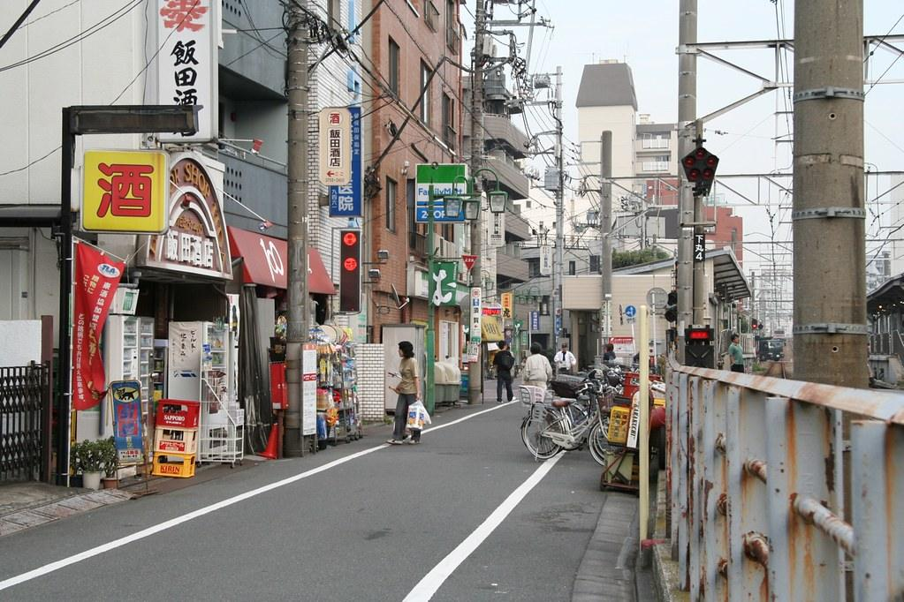
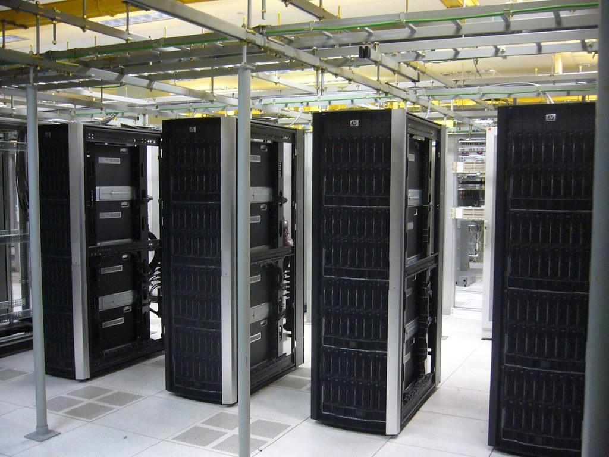
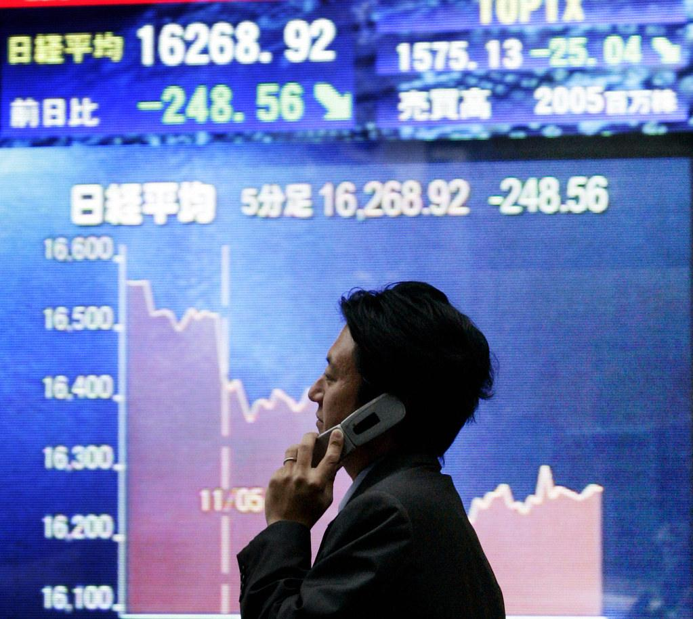
最近、こんなニュースを
見かけませんでしたか？バラバラに見えて、
実は1本の線でつながっています。
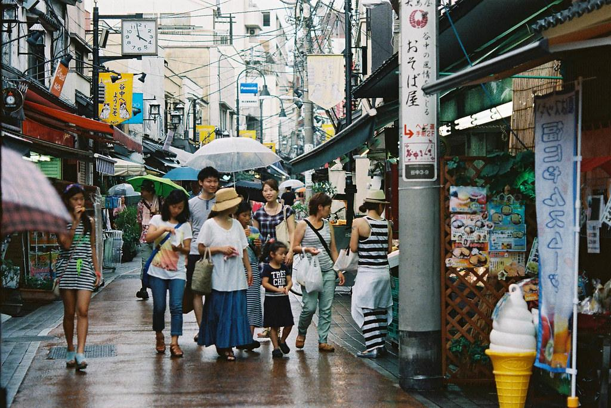
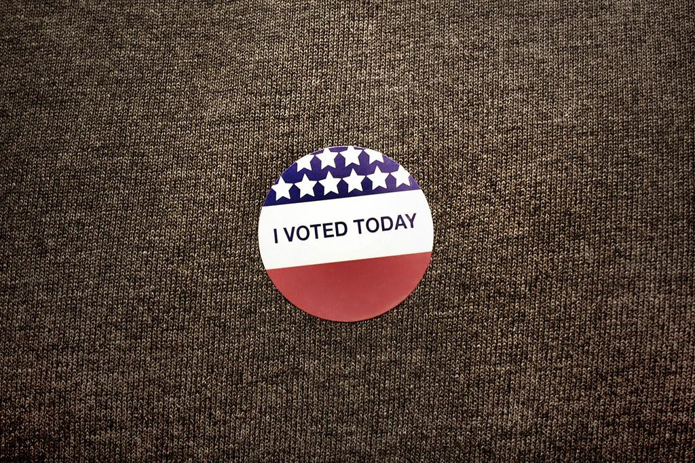
データセンターをめぐる住民投票が、
41件ありました。そのうち40件で、
規制を強める側が勝ったんです。
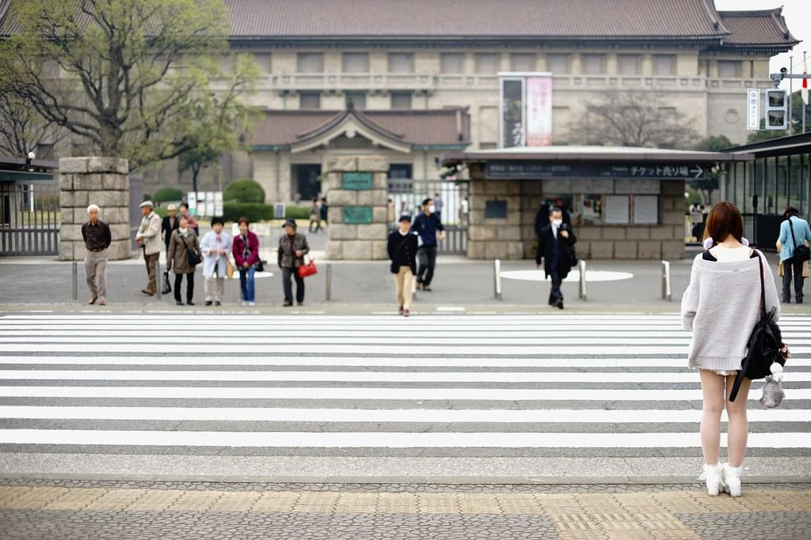
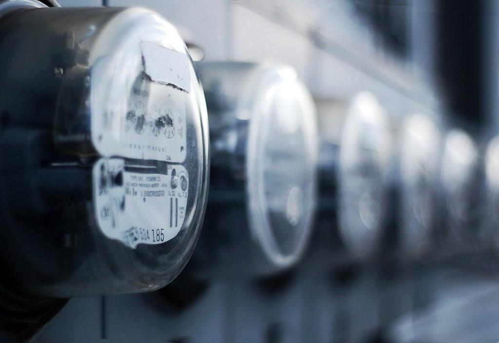
住民が怒っているのは、
AIそのものだと思いますか？答えは、電気代なんです。
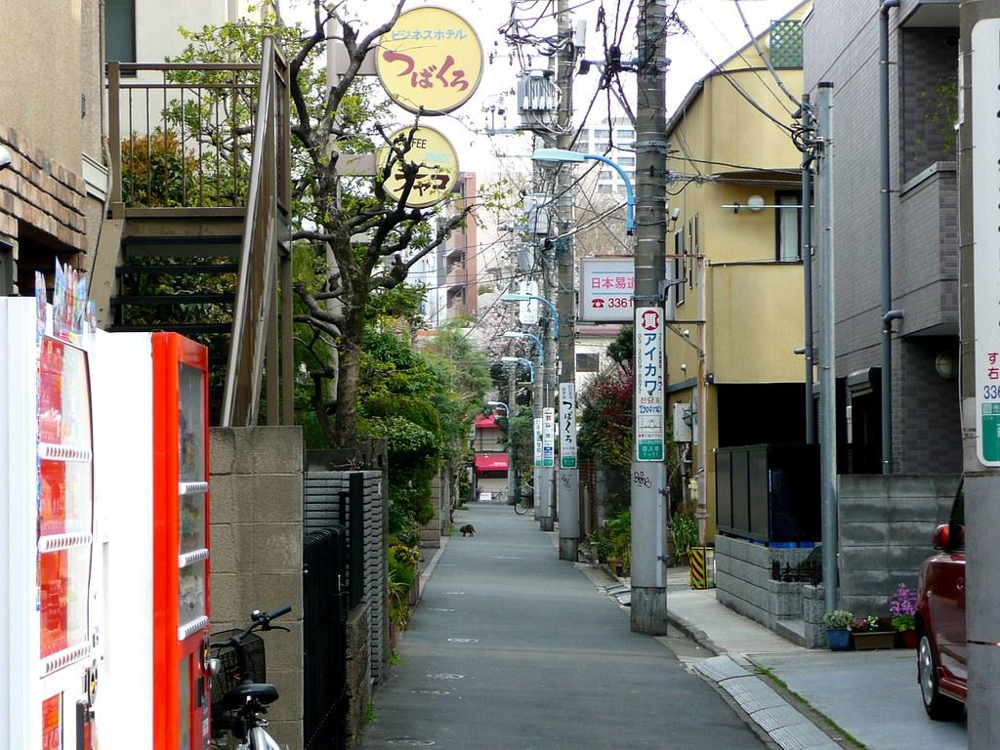
友達に一言で言うなら、「アメリカの電気代が、
日本の株を動かした」です。
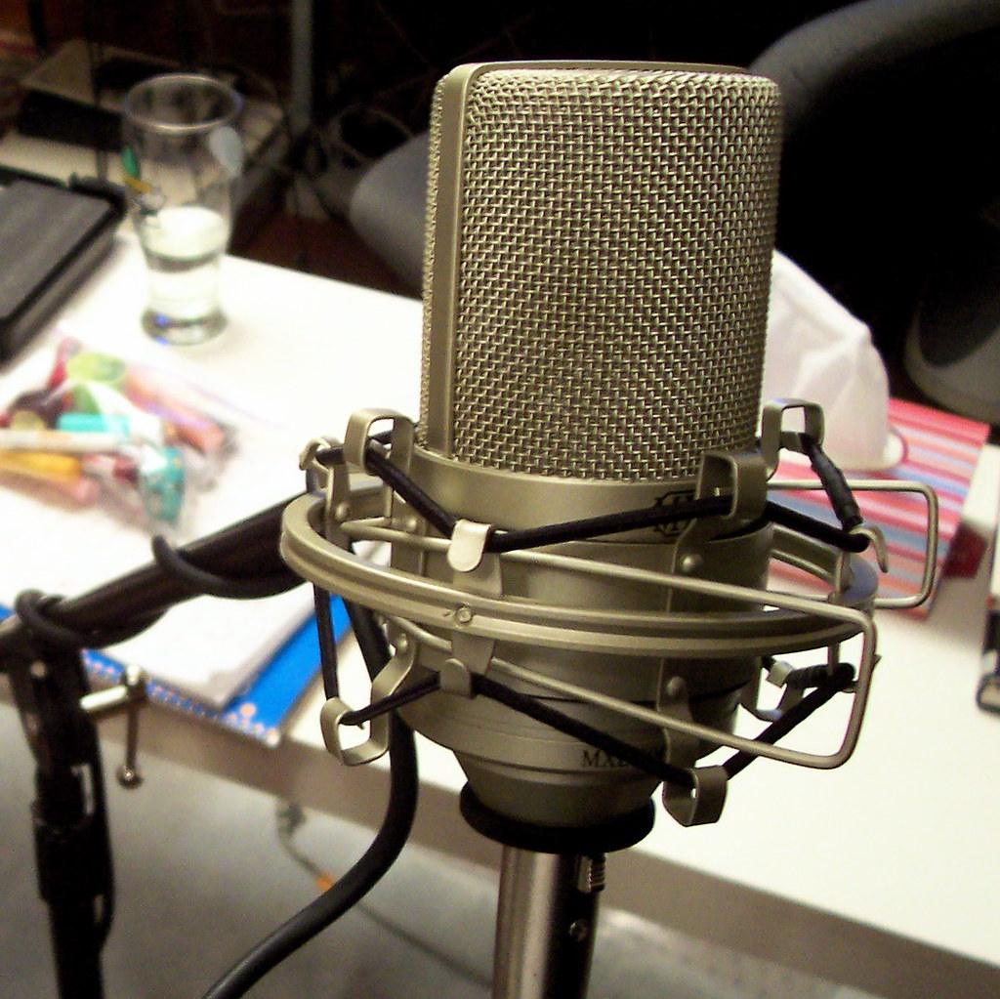
写真をピンで留め、赤い糸でつないでいきます。「点を線にする」をそのまま絵にした案です。
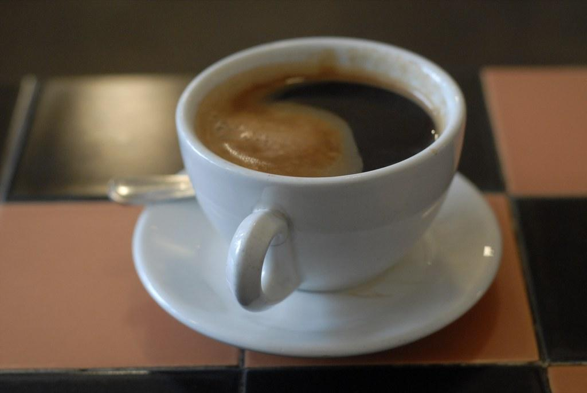
最近、こんなニュースを見かけませんでしたか？バラバラに見えて、実は1本の線でつながっています。
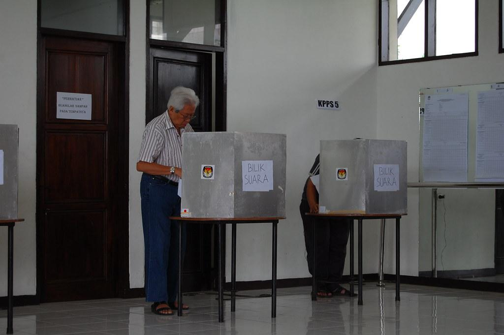
データセンターをめぐる住民投票が、41件ありました。そのうち40件で、規制を強める側が勝ったんです。
住民が怒っているのは、AIそのものだと思いますか？答えは、電気代なんです。
友達に一言で言うなら、「アメリカの電気代が、日本の株を動かした」です。
画面いっぱいの写真がゆっくり動き、語りの一文だけが下に出ます。いちばん静かで、写真の力に任せる案です。
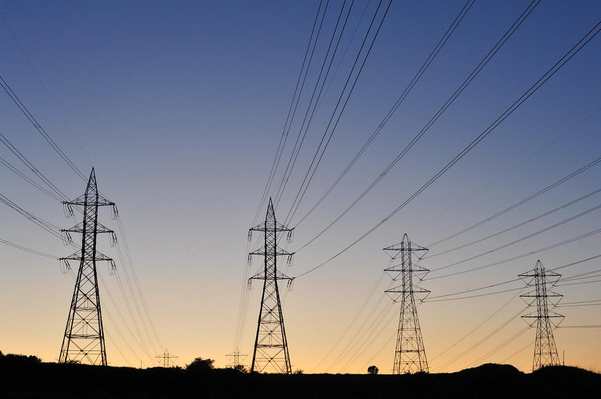
テキサス最近、こんなニュースを
見かけませんでしたか。バラバラに見えて、
実は1本の線でつながっています。
データセンターをめぐる住民投票が、
41件ありました。そのうち40件で、
規制を強める側が勝ったんです。
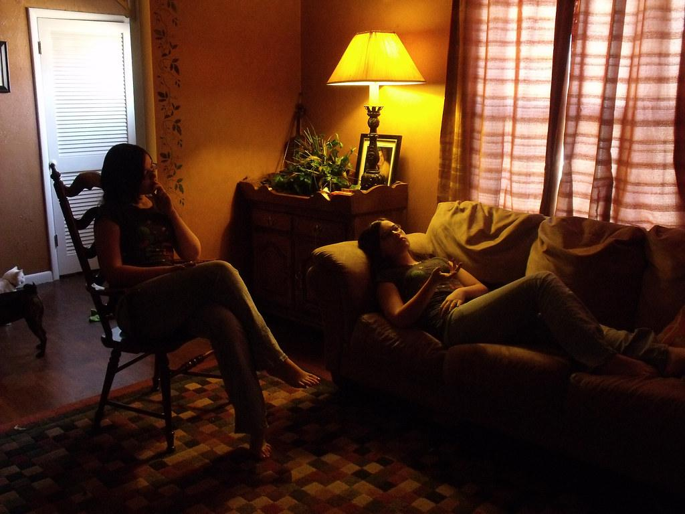
住民が怒っているのは、
AIそのものだと思いますか。答えは、電気代なんです。
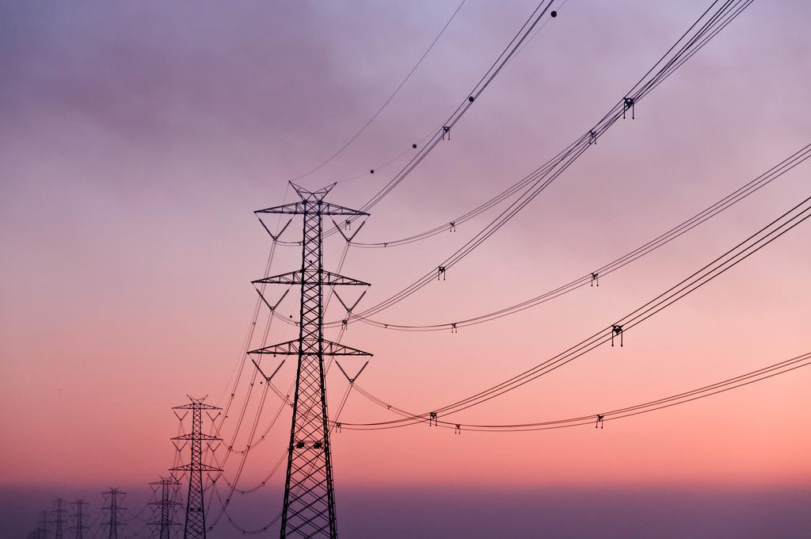
友達に一言で言うなら、「アメリカの電気代が、
日本の株を動かした」です。
色紙の背景に、丸く切り抜いた写真をシールのように貼ります。案内役は、点のキャラクターです。
最近、こんなニュースを見かけませんでしたか？バラバラに見えて、実は1本の線でつながっています。
データセンターをめぐる住民投票が、41件ありました。そのうち40件で、規制を強める側が勝ったんです。
住民が怒っているのは、AIそのものだと思いますか？答えは、電気代なんです。
友達に一言で言うなら、「アメリカの電気代が、日本の株を動かした」です。
語り手のノートをのぞき込む形です。写真をテープで貼り、ペンで書き込みながら話を進めます。
最近、こんなニュースを見かけませんでしたか？バラバラに見えて、実は1本の線でつながっています。
データセンターをめぐる住民投票が、41件ありました。そのうち40件で、規制を強める側が勝ったんです。
住民が怒っているのは、AIそのものだと思いますか？答えは、電気代なんです。
友達に一言で言うなら、「アメリカの電気代が、日本の株を動かした」です。
聞き手の素朴な質問に、語り手が答えていきます。字幕の代わりに会話の吹き出しが出て、横に写真が1枚あります。
方向が決まったら、いただいた文体定義に沿って骨組み（線の候補3つ、問い、3章、見立て）から作り直します。台本の題材はここで使った「電気代と日本株」の線で仮に組んでいますが、点の選び直しもそこで行います。
Flickrで公開されているクリエイティブ・コモンズの写真を、雰囲気の確認用に使っています。日経平均のボードなどは今回のニュースの写真ではありません。